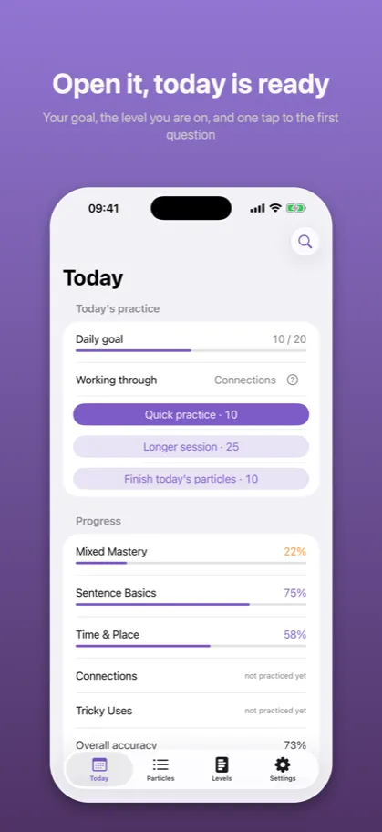
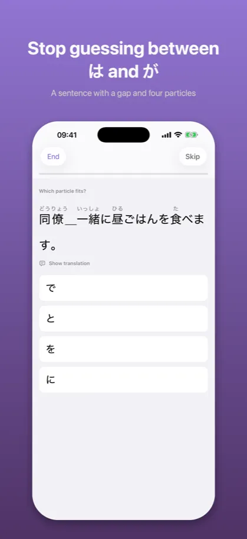
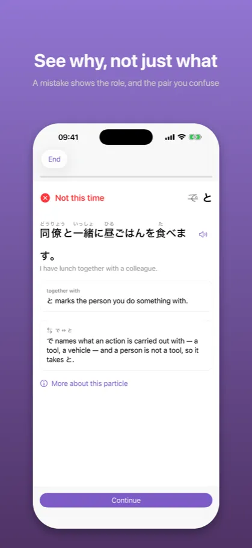

Joshi: Japanese Particles助詞
Grammar drills for the JLPT
App Store →Free app with an in-app purchase
Knowing what に means is not the same as knowing when it is で. Nine hundred sentences, one blank, four particles – until the right one arrives on its own.
What it looks like

Your goal, the level you are on, and one tap to the first question

A sentence with a gap and four particles

A mistake shows the role, and the pair you confuse
Description from the store
Japanese particles are not a list to memorise. Each one changes what the sentence is about.
You can know that に marks a destination and で marks where an action happens, and still
hesitate every time. Understanding a rule and reaching for it without thinking are two
different skills, and only the second one gets you through a sentence.
HOW IT WORKS
A natural Japanese sentence with one particle missing. Four options. Tap one.
学校＿勉強します。 に で を へ
Then, immediately: the sentence with the particle in place, what that particle is doing
there, and – if you picked a particle people genuinely confuse it with – why that one
does not fit here.
WHAT YOU PRACTICE
Twelve particles across thirty-eight distinct uses. は, が and を and the roles they play in
a sentence. に and で and the line between where something is and where something happens.
へ, と, も, の, から, まで and や. Then the same particles doing less obvious work: を with
a route you walk along, を with a place you leave, に with the purpose of going somewhere,
で with a cause, と closing a quotation, の turning a whole clause into a noun.
THE PART THAT IS DIFFERENT
Most apps can tell you that に is at 61%. That number does not tell you what to do.
Joshi tracks confusion pairs – two uses that get mistaken for each other – as a thing in
their own right. So instead of "practice more に", it can say に ↔ で needs work, and then
serve you the sentences where one is right and the other is tempting. Weak pairs are their
own practice mode.
WHY THE WRONG ANSWERS ARE FAIR
A wrong option has to be genuinely wrong in that sentence. A particle that would produce
correct Japanese with a different meaning is not a distractor – it is a second answer, and
a question with two answers teaches you something untrue. That rule cost this app a
confusion pair and a number of otherwise good sentences, and it is the reason you can
trust the red cross when you see one.
READINGS AND HINTS
Furigana over the kanji, so an unfamiliar word never turns a particle question into a
vocabulary question. The English translation sits hidden behind a tap by default, because
with it visible you match the particle to the English and practice something else without
noticing. Both are settings: never, always, or on tap.
Every sentence can also be heard. A speaker button reads it in Japanese, using the reading
the catalog knows rather than a guess at the kanji. No network needed.
PROGRESS THAT MEANS SOMETHING
Mastery is capped by how much evidence there is, so three lucky taps do not read as
mastered. Five levels, twelve particles and thirteen confusion pairs each get their own
bar. Nothing here counts questions answered.
No coins, no gems, no energy, no streak you can lose by taking a day off.
FREE AND PAID
Levels 1 and 2 are free in full – は, が, を, に, で and へ, which is most of the particles
in an ordinary sentence. One purchase, once, opens levels 3 to 5, weak-pair practice and
the whole question pool. No subscription.
PRIVACY
No account. No adverts. No analytics. No network requests at all beyond the purchase
itself. Everything you do stays on your device, and you can export it whenever you like.
The description above is the same text that stands on the App Store product page – it comes from the same file.
Common questions
What does Joshi teach?
Japanese particles are not a list to memorise. Each one changes what the sentence is about.
You can know that に marks a destination and で marks where an action happens, and still
hesitate every time. Understanding a rule and reaching for it without thinking are two
different skills, and only the second one gets you through a sentence.
What does Joshi cost?
Levels 1 and 2 are free in full – は, が, を, に, で and へ, which is most of the particles
in an ordinary sentence. One purchase, once, opens levels 3 to 5, weak-pair practice and
the whole question pool. No subscription.
Does it work without an account or a network?
No account. No adverts. No analytics. No network requests at all beyond the purchase
itself. Everything you do stays on your device, and you can export it whenever you like.
Documents
The other apps
- Kaname: Japanese Grammar — JLPT practice: N5 N4 N3 N2 N1
- Bunmyaku: Japanese Reading — Vocabulary, kanji, furigana
- Katsuyokei: Conjugation — Verbs, adjectives and drills
- Kazoekata: Japanese Counters — Counting, kanji and drills
- Kuzushi: Casual Japanese — Anime, drama and slang
- Shindan: Japanese Level Test — JLPT placement: N5 N4 N3 N2 N1
- Keigo: Polite Japanese — Formal Japanese for work
- Kifuku: Japanese Pitch Accent — Pronunciation and listening
- Onomatope: Japanese Mimetics — Manga and anime vocabulary